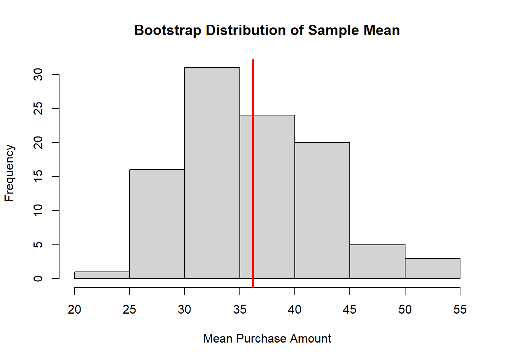
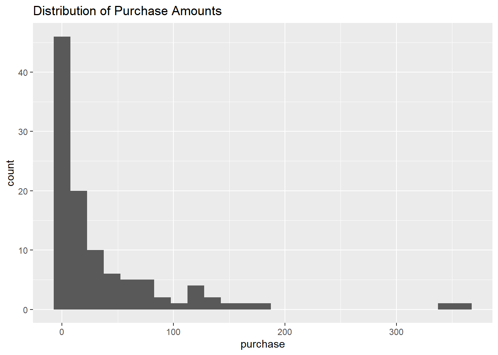

Show code
# use this chunk to load any packages you need to do the analysis, e.g., ggplot2 or MASS
library(readr)
library(ggplot2)
library(dplyr)Microtransactions are small “add-ons” that video game players can purchase, including new cosmetic options for the player’s character, items, “loot boxes” that contain randomized content, etc. Unlike a traditional model, which sells the entire game for a fixed price, microtransaction-based business models place no theoretical upper limit on the amount of money a player can spend over the lifetime of the game.
Researchers are interested in estimating the average amount spent by Fortnite players on microtransactions in a typical month. Because Fortnite is a game played all over the world, they ensure that their sample of roughly 100 Fortnite players is also global. The one researcher on the team that remembers any of their introductory statistics constructs a 95% one-sample t confidence interval of (\(\$24.48, \$47.92\)). However, when looking up how to interpret this interval, they find some resources that claim that they should not be doing this procedure because, although the sample size is at least 40, there are some extreme outliers in their data. They have asked you to help them come up with a better confidence interval and interpret what that interval means.
# this code should work if you make a folder called Projects in your Math 337 folder and put this file in it
# you may need to open it inside your Math 337 R project
here::i_am("Fornite_MicroTransactions.qmd")
# this code should work if you make a folder called Data in your Math 337 folder and put the fortnite_spend data in it
fortnite_spend <- fortnite_spend <- read_csv("Instructions_Data/fortnite_spend.csv")The data used comes from Etchells, Morgan, and Quintana (2022), “Loot box spending is associated with problem gambling but not mental wellbeing,” and was collected via survey advertised on Reddit, Twitter, and Science Focus magazine during Fall 2020 and Spring 2021. It is unknown to what extent this sample represents Fortnite players in 2025.
Goal 1: Using a nonparametric bootstrap, I generated 100 resampled datasets from the original purchase data and then calculated the mean for each sample to estimate the sampling distribution of the sample mean.
This results in the distribution having a mean of 36.17 and a standard deviation of 6.27, which shows the variance we might see in the samples of the sample mean.
## Goal 1
# set seed
set.seed(314)
B <- 100 # number of bootstrap samples
n <- nrow(fortnite_spend) # sample size (number of obs in data (206 for this))
# Generate bootstrap samples from purchase data
# Each row of the matrix represents one bootstrap sample of size n=106
mean_boot_sample <- matrix(
sample(fortnite_spend$purchase, size = n * B, replace = TRUE),
nrow = B
)
# Getting the mean for each bootstrap sample
# theta_star is a vector of all the means aka the sampling distribution???
theta_star <- apply(mean_boot_sample, 1, mean)
# Summarize the bootstrap sampling distribution
mean(theta_star) # Mean of the bootstrap [1] 36.17134[1] 6.272001# Plot: the histogram looks pretty normal (compared to what they had),
# meaning we can now get better estimates
hist(theta_star, main = "Bootstrap Distribution of Sample Mean",
xlab = "Mean Purchase Amount")
# red line showing the og sample mean
abline(v = mean(fortnite_spend$purchase), col = "red", lwd = 2)
Goal 2: The histogram of purchase amounts is strongly right skewed with an obvious outlier. This shows that the data is not normally distributed. Even though the t-test produced a confidence interval, it would not be right to assume a normal sampling distribution for the sample mean. This is why I suggest to use the nonparametric method above to get a more reliable estimate.
One Sample t-test
data: fortnite_spend$purchase
t = 6.1264, df = 105, p-value = 1.59e-08
alternative hypothesis: true mean is not equal to 0
95 percent confidence interval:
24.48388 47.91631
sample estimates:
mean of x
36.20009 
Goal 1: Using the sample mean of the bootstrap sampling distribute, I estimate the population mean purchase amount to be $36.17. I also computed a 95% confidence interval giving and interval of about $26.19 to $50.01 . This confidence interval helps explain any variability that might pop up if I repeatedly sampled the original population.
[1] 36.17134 2.5% 97.5%
26.18693 50.00525 Goal 2: These estimates suggest that the average amount spent on microtransactions is about $36.17. The 95% confidence interval ($26.19 to $50.01) shows that the true average spending for the entire population of players likely is within this range. This hopefully gives the researchers a better idea of typical spending behavior while recognizing variability.
Goal 1: Assuming the purchase amounts follow an exponential distribution, the rate parameter can be estimated as 1/(sample mean). Using the average spending ($36.17), the estimated rate is approximately 0.028, which can be used to model the exponential distribution of purchase amounts.
Goal 2: The parametric bootstrap shows that 91.6% of the confidence intervals contain the true mean. This is slightly below the 95% confidence interval constructed earlier. This means even my confidence interval slightly underestimated the true coverage.
## Goal 2
# function to compute bootstrap percentile confidence interval for mean
boot_mean_percentile_ci <- function(x, B = 100, C = 0.95){
n <- length(x)
# Generate B bootstrap samples from x (data)
boot_sample <- matrix(
sample(x, n*B, replace = TRUE),
nrow = B)
# mean of each bootstrap sample
theta_star <- apply(boot_sample, 1, mean)
# get CI
alpha <- 1 - C
perc_ci <- quantile(theta_star, c(alpha/2, 1 - alpha/2))
return(perc_ci)
}
# Generate parametric bootstrap data using the estimated exponential distribution
# 1000 simulated datasets of size 100
set.seed(314)
big_data <- matrix(
round(rexp(1000*100, rate),2),
nrow = 1000,
ncol = 100)
# apply bootstrap CI function
boot_cis <- apply(big_data, 1, boot_mean_percentile_ci)
# put results into a data frame
bounds <- data.frame(low = boot_cis[1,], high = boot_cis[2,])
# is the original mean covered by each CI
bounds_sorted <- bounds |>
mutate(
index = 1:1000,
cover = (x.bar >= low & x.bar <= high)
)
# summarize coverage
bounds_sorted |>
summarize(
too_low = mean(high < x.bar), # CI below true mean
too_high = mean(low > x.bar), # CI above true mean
just_right = mean(cover) # CI has true mean
) too_low too_high just_right
1 0.06 0.024 0.916A bootstrap works by resampling from the data given over and over. It recalculates the statistic (in this case the mean) each time to see how it differs. The nonparametric bootstrap does this by resampling directly from the data (section 1) while the parametric bootstrap, assumes a model for the data (section 3 with an exponential distribution) and generate new samples from that model.